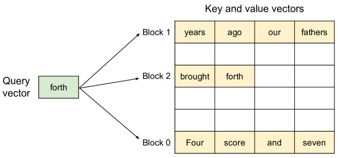

发展脉络
效率优化从权重量化和 KV Cache，发展到 paged serving、推测解码、Prefill/Decode 分离和端到端成本工程。
同一个 7B 模型，用 HuggingFace Transformers 直接跑可能只有 20 token/s，换 vLLM 能到 2000+ token/s——百倍差距不在模型，在引擎。推理引擎的核心不是「算得更快」，而是「调度得更聪明」：连续批处理让 GPU 不闲着，KV Cache 管理让显存不浪费，前缀缓存让重复计算直接跳过。
推理引擎要解决的核心问题是：GPU 利用率。大模型推理是访存密集型任务，Decode 阶段每生成一个 token 只做一次矩阵向量乘，GPU 计算单元大量闲置。引擎的核心价值就是通过连续批处理把多个请求的 Decode 混在一起算，让 GPU 始终满载。
理解推理引擎，必须先理解大模型推理的两个截然不同的阶段，它们的算力特征完全相反：
处理输入 prompt，一次性算出所有位置的 KV Cache。计算密集型：GPU 算力是瓶颈。一个 1000 token 的 prompt 只需一次前向传播，矩阵乘规模大，GPU 利用率高。
每次只生成一个 token，用上一步的 KV Cache 做一次矩阵向量乘。访存密集型：每次只算一个 token，但要加载全部权重和 KV Cache，算力大量闲置，瓶颈在显存带宽。
这个差异决定了推理引擎的核心设计：Prefill 可以用大 batch 榨干算力，Decode 必须靠大 batch 摊薄访存开销。一个请求单独 Decode 时，加载 14GB 权重只为算一个 token——相当于搬了一整座图书馆只借一本书。连续批处理让 100 个请求同时 Decode，14GB 权重只加载一次却能产出 100 个 token，单 token 的访存成本降到 1/100。
传统的静态批处理（Static Batching）把一批请求凑齐后一起送进模型，等所有请求都生成完毕（或达到 max_tokens）才能接受下一批。问题是请求长度差异大——有的 20 token 就答完，有的要 500 token，短请求被迫陪长请求干等，GPU 在等待中闲置。
连续批处理（Continuous Batching，也叫 In-Flight Batching 或 Iteration-Level Batching）的关键改动是：在每个 Decode step 的粒度上做批处理。每个 step 检查哪些请求已经完成（遇到 EOS 或达到长度上限），完成的立即移出，新请求立即插入——不需要等同一批的其他请求。这让 GPU 在每一个 step 都保持满载。
连续批处理的前提是能高效管理 KV Cache。每个请求的 KV Cache 随生成长度线性增长，不同请求长度不同，这就带来了显存碎片问题。
朴素方案：预分配最大长度的连续显存。一个请求最多可能生成 2048 token，就预分配 2048 的 KV Cache 空间。问题：大部分请求只生成 100-300 token，预分配的空间大量浪费，且碎片化严重——大块连续显存被切散后，新请求找不到足够大的连续块。
PagedAttention（vLLM）：借鉴操作系统的虚拟内存分页机制，把 KV Cache 切成固定大小的 block（如每 block 存 16 个 token 的 KV），用 block table 记录逻辑到物理的映射。请求的 KV Cache 不需要连续存储，按需分配 block，用完归还。
下面这张是 vLLM 论文里的原图，它把「分页」这件事画得非常直观：左边是逻辑视角（KV Cache 属于谁、排成什么样），右边是物理视角（这些 block 实际散落在 GPU 显存的哪些位置）。

逐块读这张图。第一，看左侧的逻辑视图：每个请求（图中用不同颜色区分）的 KV Cache 在「逻辑上」是一条连续的 token 序列，新的 token 不断追加到末尾——这对应生成过程里 KV 随生成长度线性增长的事实。第二，看中间的映射表（block table）：每一行记录「逻辑块号 → 物理块地址」，就像操作系统的页表。请求 A 的逻辑第 0 块可能对应物理的第 3 块，逻辑第 1 块却跑到物理第 6 块——物理上完全不需要连续。第三，看右侧的物理显存布局：一整块 GPU 显存被预先切成许多固定大小的小格（block），不同请求的 block 交错散布在格子里。妙处在于：新请求到达时，从空闲 block 池里拿几个格子就够，不需要找「足够大的连续空洞」；请求结束时，把格子还回池子，碎片被彻底消灭。
这张图还解释了 PagedAttention 的另一个隐藏收益——共享。既然 block 是独立可寻址的，两个请求如果共享一段相同的 KV（例如同一个系统提示），它们可以在 block table 里指向同一个物理 block，只读不改；只有需要追加新 token 时才复制。这个「写时复制」（copy-on-write）能力是前缀缓存（见下文）能落地的底层机制。注意，分页的代价是注意力计算时要多一次「从 block table 查物理地址」的间接寻址，以及 KV 可能跨块散布带来的访存不连续——这正是 PagedAttention 论文里专门写了一个 GPU kernel 去处理的原因，也是它比朴素实现复杂的地方。
| 维度 | 朴素预分配 | PagedAttention |
|---|---|---|
| 显存利用率 | 60-80%（大量预分配浪费） | 接近 100%（按需分配） |
| 碎片问题 | 外部碎片严重 | 几乎无碎片（block 粒度分配） |
| 最大并发请求 | 受预分配限制 | 显存用满为止 |
| 前缀缓存 | 难以实现（地址不连续） | 天然支持（共享 block） |
SGLang 的 RadixAttention 在 PagedAttention 基础上更进一步：用基数树（Radix Tree）管理前缀缓存，自动识别多个请求共享的系统提示和对话前缀，把它们对应的 KV Cache 缓存为可复用的 block。这在多轮对话和 RAG 场景下效果显著——100 个用户共用同一个系统提示，系统提示的 KV Cache 只算一次。
为什么要费这么大劲分页？论文里的另一张原图直接回答了这个问题——它把「朴素实现有多浪费」量化了出来。

读这张图重点看两类元素。第一是显存浪费的构成：图中通常用不同颜色把预分配浪费（每个请求按最大长度预留）、内部碎片（block 内的空洞）和外部碎片（物理内存的零散空洞）标出来。你可以直观看到朴素方案里「预分配浪费」占了很大一块——每个请求哪怕实际只生成 200 token，也按 2048 的最大长度预留了空间，大量显存被「占着不用」。第二是横轴的序列长度和 batch 大小：随着单请求长度增加、并发 batch 增大，朴素实现的浪费急剧上升，而 PagedAttention 的显存占用基本按「实际在用」走——这就是为什么它能装下 2-4 倍的并发请求。
这张图还顺带点破了一个新手误区：「显存不够」很多时候不是卡太小，而是内存管理太粗。同一块 80GB 显存，朴素方案也许只能并排放 20 条长请求，PagedAttention 能放到 60-80 条——吞吐的提升不是靠换硬件，而是靠把「预留但没用」的显存释放出来。这也是推理引擎「调度得聪明」价值的最直接证据。
理论上连续批处理能带来 10-50 倍吞吐提升，但这个数字是怎么来的，又受什么限制？把它和静态批处理逐项拆开看更清楚：
| 对比维度 | 静态批处理 Static Batching | 连续批处理 Continuous Batching |
|---|---|---|
| 调度粒度 | 一个 batch 一批请求，全部完成才换下一批 | 每个 Decode step 都重新组织 batch |
| 短请求命运 | 陪最长请求干等，GPU 在等待中闲置 | 完成即移出，资源立刻让给新请求 |
| 显存占用 | 按最长序列预占，浪费大 | 按实际在跑的请求动态分配 |
| 新增请求 | 必须等下一批，首 token 延迟高 | 随时插入，TTFT 更稳 |
| 典型加速 | 基线（1×） | 10-50×（取决于请求长度方差） |
| 代价 | 实现简单 | 调度器复杂，需配合 PagedAttention 管理可变长 KV |
| 维度 | vLLM | SGLang | TensorRT-LLM |
|---|---|---|---|
| 开发方 | UC Berkeley | UC Berkeley / LMSYS | NVIDIA |
| 核心创新 | PagedAttention | RadixAttention + 结构化生成加速 | 深度 kernel 融合 + Tensor Core 优化 |
| 易用性 | 高，OpenAI 兼容 API，一行命令部署 | 高，兼容 OpenAI API | 中，需编译 engine 文件，配置复杂 |
| 硬件绑定 | 跨厂商（NVIDIA/AMD/Intel） | 主要 NVIDIA，部分支持 AMD | NVIDIA 专属 |
| 性能调优 | 通用优化，开箱即用 | 结构化输出和复杂控制流有独特优势 | NVIDIA 硬件上极致性能 |
| 模型支持 | 广，社区贡献快 | 较广，跟进主流模型 | 需等 NVIDIA 官方适配 |
| 适用场景 | 通用部署、快速验证 | Agent / 多轮对话 / 结构化输出 | 生产环境极致吞吐（NVIDIA） |
把上面这些机制收拢来看，一个现代推理引擎其实就是下面这张能力地图里的几块拼起来。理解这张图，就能看懂任何一篇引擎技术文档在讲哪一块：
连续批处理带来了一个调度问题：当请求队列很长而 GPU 算力有限时，先处理谁？这直接影响延迟和公平性。
最简单的策略，按到达顺序处理。公平但不够灵活，长请求会阻塞短请求。
Prefill 是计算密集型，Decode 是访存密集型，混在一起会互相干扰。分离调度让两者交替或分到不同 GPU，见 PD 分离。
给请求设优先级（如付费用户优先），在 batch 中优先插入高优先级请求。vLLM 和 SGLang 均支持。
一个关键的调度权衡是 batch size vs 延迟：batch 越大吞吐越高（摊薄访存），但单个请求的延迟也越高（排队等凑批）。在线服务通常设一个 max_batch_size 上限和 max_waiting_time 超时，在吞吐和延迟之间取平衡。
很多 LLM 请求共享相同的前缀：同一个系统提示、同一份 RAG 检索结果、同一段 few-shot 示例。前缀缓存把这些共享前缀的 KV Cache 保留下来，后续请求命中缓存时直接跳过 Prefill 计算。
在 RAG 场景下，前缀缓存的收益尤其大：如果多个用户查询的是同一批文档，检索到的上下文 chunk 相同，Prefill 阶段可以直接跳过这些 chunk 的计算，首 token 延迟（TTFT）可能降低 50% 以上。
# 最简单的部署：一行命令启动 OpenAI 兼容服务
vllm serve --model Qwen/Qwen2.5-7B-Instruct \
--port 8000 \
--max-model-len 32768 \
--gpu-memory-utilization 0.9 \
--enable-prefix-caching
# 关键参数说明：
# --max-model-len：最大上下文长度，影响 KV Cache 预分配
# --gpu-memory-utilization：显存使用上限，留余量给系统
# --enable-prefix-caching：开启前缀缓存（RAG/多轮对话必开）
# --tensor-parallel-size N：多卡张量并行
# --quantization awq/gptq：配合量化模型使用
# 测试
curl http://localhost:8000/v1/chat/completions \
-H "Content-Type: application/json" \
-d '{"model":"Qwen/Qwen2.5-7B-Instruct",
"messages":[{"role":"user","content":"你好"}]}'生产环境还需要考虑多实例负载均衡、优雅退出、请求超时和重试。vLLM 的 --served-model-name 可以设别名，--api-key 可以加简单鉴权，但完整的 API 网关建议用 Nginx 或专用网关。
看引擎评测时，经常被「2000+ token/s」这种单一数字误导。但 token/s 是聚合指标，藏了很多信息。要公平对比，得拆成三个互相牵制的量：
| 指标 | 含义 | 由什么决定 | 典型健康值 |
|---|---|---|---|
| TTFT 首 token 延迟 | 请求到达 → 第一个 token 返回 | Prompt 长度、Prefill 算力、队列深度 | p99 < 1-2s |
| TPOT 每 token 延迟 | 生成阶段相邻 token 的平均间隔 | batch size、显存带宽、是否投机解码 | p99 < 50-100ms |
| 吞吐 token/s | 单位时间内产出的总 token 数 | batch 大小、GPU 利用率、并发数 | 越大越好，但看 batch 设定 |
| 并发 在线请求数 | 同一时刻在跑的请求数 | 显存（KV Cache 上限）、调度策略 | 受 max_num_seqs 限制 |
一个常见陷阱：某引擎宣传「吞吐 3000 token/s」，但那是 batch=256 下测的；你的在线服务 batch 通常只有 8-32，此时吞吐可能只剩 1/3，而 TPOT 反而更低。所以永远在自己的目标并发和序列长度下重新 benchmark。此外，很多评测只报平均吞吐，不报 p99 延迟——线上用户感知的是延迟，不是平均吞吐。
连续批处理解决了「短请求被长请求拖累」的问题，但还有另一个调度矛盾没解决：一个 8192 token 的超长 prompt 进入 Prefill 时，它一次性就要消耗与 8192 个 Decode 步相当的计算量。如果让这个长 Prefill 和 Decode 混在同一个 batch 里，调度器要么让它独占 GPU 几秒钟——把正在 Decode 的所有请求全部卡死，TPOT 瞬间飙升到秒级；要么让它排队等 Decode 空闲——但 Decode 永远不会彻底空闲，TTFT 又被无限拉长。
Chunked Prefill（分块预填充）把超长 prompt 切成若干固定大小的小块（如每块 256-1024 token），每块作为一个独立的「迷你 Prefill」插入到连续批处理的调度循环里。这样长 prompt 的 Prefill 不是一次性占满 GPU，而是像 Decode 一样以小步幅穿插执行：算完一块 KV，就轮到其他请求的 Decode，再算下一块。代价是块与块之间无法并行，整体 Prefill 耗时比一次算完更长；但换来了「TTFT 有界、TPOT 稳定」的可预期性。
这里的关键权衡是块大小。块越大，Prefill 的计算密度越高、总的调度开销越小，但对 Decode 的挤占越严重；块越小，对 Decode 越友好，但 prefill 内部并行度被削减，且频繁的调度切换会带来额外开销。vLLM 默认用 chunked prefill 来平衡两者的延迟，实际调优时通常从 512 起步，用 profiling 看 TTFT p99 和 TPOT p99 的联合分布来决定。分块 Prefill 的本质是把「单个长请求的体验」让渡一部分给「全体请求的稳定性」——在混合负载下这是几乎必选的工程决策。
前面说「Decode 访存密集」，值得把这一步的账算到底。以 7B 模型 FP16 为例，权重约 14 GB。A100 的 HBM 带宽约 2 TB/s，也就是说，每生成一个 token，光是把全部权重读一遍就要花大约 14 GB ÷ 2 TB/s ≈ 7 毫秒。算上 KV Cache 和其他开销，单请求解码的物理下限就是每 token 几十毫秒量级——这就是「一人一书」的硬边界，无论 kernel 怎么优化都绕不开，因为权重必须被逐层读过。
于是引擎提高吞吐的唯一出路就是把权重读取「摊销」到更多请求上。如果 batch 里有 100 个请求在 Decode，理论上仍然是读一遍 14 GB 权重，但这一步同时产出 100 个 token，等效吞吐就是单请求的 100 倍。这正是连续批处理的价值所在——它让「读一次权重」的固定成本被尽可能多的并行请求分担。
但这个摊销不是无上限的：batch 越大，每步要读的 KV Cache 也越大（每个请求都有一段自己的 KV），同时激活显存和计算量也在涨。当 batch 增大到某个程度后，KV Cache 读取开始成为新的带宽大头，吞吐曲线从「随 batch 线性上升」转为「趋平甚至回落」。这就是为什么引擎文档里常看到「最大 batch 数」的配置——超过它，加并发不再带来吞吐，只带来延迟劣化。
把这三段账串起来：单请求解码慢是带宽决定的，连续批处理靠摊销解决；但摊销的极限由 KV Cache 带宽决定，于是又引出 PagedAttention（管理显存碎片）、前缀缓存（省 prefill）、甚至 KV 量化（压缩缓存体积）这些后续手段。理解这条因果链，读任何引擎文档都能立刻知道它在解决哪一环。
把前面几笔账合在一起，算一个部署时最常被问的问题：一张 A100 80GB 能同时服务多少条请求？以 7B 模型、FP16 为例逐步算。
第一步，权重占多少。7B × 2 字节 ≈ 14 GB。这是固定开销，加载后不再变化。
第二步，每条请求的 KV 占多少。7B 模型一般 28-32 层、32 个 KV 头、头维度 128、FP16：每 token 的 KV 约 2 × 30 × 32 × 128 × 2 字节 ≈ 0.5 MB。一条生成 2048 token 的请求，KV 约 2048 × 0.5 MB ≈ 1 GB。
第三步，用剩余显存除以单条需求。80 GB 减掉权重 14 GB、再给激活和系统留 10 GB 余量，剩约 56 GB。56 GB ÷ 1 GB ≈ 56 条并发请求。
现在把同样的数字套进朴素预分配：朴素方案按「最大生成长度 8192」预分配，每条请求预留 8192 × 0.5 MB ≈ 4 GB，56 GB ÷ 4 GB ≈ 14 条。同样是 80GB 的卡，PagedAttention 的并发上限是朴素方案的 4 倍——而这还没算上碎片带来的额外浪费。这个算例里所有数字都是量级估计，换模型、换位宽、换上下文长度都会变，但「显存管理决定并发上限」这个结论不变。
顺带一个反直觉的点：KV 每 token 的体积和层数、头数成正比。70B 模型因为层数和头数几乎是 7B 的 2-3 倍，每 token KV 高达 1.25-2.5 MB——同样的 2048 token 请求要占 3-5 GB，一张卡只能并排跑十几条。所以大模型的显存瓶颈往往不是权重，而是 KV Cache。
调度和显存管理是引擎的「上层功夫」，还有一半在下层：算子融合（kernel fusion）和 CUDA Graph 捕获。这两项直接决定「每一步到底有多快」。
算子的执行是有固定开销的：每次 kernel 启动，GPU 都要花几微秒做调度准备，而 Decode 的单个矩阵向量乘本身可能只要几十微秒。如果一个 Decode 步被拆成 50 个小 kernel 逐个启动，光启动开销就吃掉一半时间。引擎的做法是把多个连续算子融合成一个 kernel——比如把 QK^T、softmax、PV 融合成 FlashAttention 一个 kernel，把 RMSNorm 和线性层融合，把激活函数并进矩阵乘里。融合后 kernel 数量从几十个降到几个，启动开销和中间结果的 HBM 读写同时被砍掉。这也是为什么同样一个模型，原生 PyTorch 和引擎的逐 token 延迟能差出 2-4 倍。
CUDA Graph 是另一招：它把一小段计算图「录制成图」并捕获，之后每次执行直接重放，跳过了 Python 解释器、框架调度和绝大多数 kernel 启动的开销。对于 Decode 这种「同样的计算图、不同的输入张量」的固定模式特别合适——图是一次性的，输入数据通过可更新的内存槽位换进去。代价是图的形状要固定，所以 batch 变化（连续批处理每步都在变 batch）会和 CUDA Graph 冲突，引擎通常用「按 batch 大小预编译多个图」或「图内预留 padding」来缓解，这也是为什么 vLLM 会限制 batch 只能取某些特定值（如 8、16、32）。
了解这一层，对选型有个直接帮助：不同引擎的 kernel 融合深度和 CUDA Graph 策略不同，在延迟敏感、batch 小的场景下差异尤其明显。实测对比时如果只差 10%，多半是融合和图的功劳；如果差 3 倍，通常还叠加了调度和显存管理的差距。
单实例的吞吐有上限（受显存容量和带宽约束），要承载更大流量就得横向扩展。但多实例不是简单地把几个 vLLM 进程叠在一起，关键在于请求怎么被分发，以及实例间的 KV Cache 如何配合。
最朴素的做法是轮询（round-robin）：请求均匀分发到各实例。问题在于 KV Cache 前缀缓存是「实例本地」的——同一用户的多轮对话如果被分发到不同实例，每个实例都要从头重新 prefill，前缀缓存命中率趋近于零，TTFT 翻倍。正确的做法是会话亲和（session affinity）：按会话或用户维度把请求固定路由到同一实例，让前缀缓存能跨轮复用。大规模 RAG 场景更进一步，按「前缀哈希」路由，让共享同一文档上下文的请求落在同一实例上，命中率更高——这也正是 SGLang 的 RadixAttention 前缀树要解决的调度问题。
负载均衡还要看实例的「水位」而不是请求数：两个实例请求数相同，但一个刚处理完 32K 长上下文、KV Cache 快满了，另一个还很空，它们的剩余容量天差地别。成熟的方案会让引擎上报 KV Cache 利用率作为调度依据，网关据此把新请求路由到最「有余量」的实例，避免个别实例被长请求打满。
最后是扩容时机：LLM 实例冷启动慢（加载 14GB 权重 + CUDA graph 预热可能花几十秒到几分钟），所以扩缩容要「预测式」而非「响应式」——在流量高峰来临前提前扩容，缩容要设冷却期，否则刚拉起一个实例还没热好，流量又回落，白白烧钱。这跟 服务化与推理经济学 里的自动扩缩容讨论是同一套逻辑。
回到「三个引擎怎么选」这个最常见的提问。理性的答案不是选最快的，而是按你的约束排序：如果你只有 NVIDIA GPU 且追求极致吞吐、愿意投入工程时间编译 engine 文件，TensorRT-LLM 值得一试；如果你要快速上线、兼容 OpenAI API、社区踩坑少，vLLM 是最稳妥的默认项；如果业务大量依赖结构化输出、复杂控制流和共享前缀，SGLang 的 RadixAttention 和约束解码会带来实打实的差异。
更重要的判断依据是流量画像而不是榜单。短 prompt + 短输出的搜索场景，瓶颈在调度和 prefill，选调度灵活的；长上下文 + 长生成的 Agent 场景，瓶颈在 KV 管理，选显存管理强的；超低延迟的交互场景，CUDA Graph 和算子融合的深度比调度更重要。同一个 vLLM，把 max_num_seqs、chunked prefill 大小、KV 管理策略调对，吞吐可以差出 30-50%——引擎选型只是第一步，参数调优才是收益的大头。
最后补一个容易踩的坑：不要在生产流量峰值时才去调引擎参数。所有涉及显存预分配、KV 块大小、batch 上限的配置一旦改动，都需要重启实例重新预热，冷启动又要几十秒。正确的节奏是在压测环境里先扫一遍参数组合，把「高水位 + 长 prompt + 高并发」的混合流量跑稳，再带着验证过的配置上线。
前面的内容解释了 Prefill、Decode、连续批处理和 KV Cache 的基本机制。本节从工程面试与生产排障的角度，把它们串成一套可执行的系统：调度器每轮决定哪些请求占用计算预算，块式缓存决定显存能容纳多少并发，SLA 决定什么时候必须让出吞吐换取延迟稳定。以下结论是设计原则，不把某个模型、GPU 或 benchmark 的数字当成普遍规律。
Static Batching 通常以“凑一批—执行完整生成—统一返回”为边界。服务先等待固定 batch size，或等待一个短暂的 batching window；batch 内每条序列都要保留输入、输出和 KV 的槽位，短序列结束后只能 padding 或空转，下一批要等最长序列退出。它的优点是实现简单、张量形状稳定，适合离线任务或长度分布很窄的流量；缺点是排队时间和尾延迟容易被最长请求放大。
Continuous Batching 把边界下沉到一次 Decode iteration。调度器维护 waiting、running、finished 三类集合，每轮先回收 EOS、超时、取消或达到 max_tokens 的请求，再按预算把等待请求加入；本轮只为真实有效的序列计算一个新 token。新请求的 Prefill 可能与 Decode 竞争显存带宽，因此成熟实现还会限制每轮 prefill token 数、设置优先级，并让长 prompt 分块进入。
| 调度步骤 | 静态批处理 | 连续批处理 | 工程关注点 |
|---|---|---|---|
| 入队 | 等窗口或等满 batch | 到达即进入 waiting queue | 窗口过长会抬高 TTFT |
| 执行单位 | 一批完成一个完整序列 | 一次 iteration 生成一个 token | 需要可变长度 KV 的块管理 |
| 退出 | 通常整批同步退出 | 单请求完成即回收资源 | 回收 block、计费和流式连接 |
| 公平性 | 容易被长请求拖住 | 可按 FCFS、优先级或配额混排 | 防止高优先级饥饿低优先级 |
| 形状与开销 | 形状稳定，调度开销较低 | 形状变化，调度和元数据更复杂 | 可配合 CUDA Graph 或 padding |
while serving:
reclaim(finished | cancelled | timed_out)
budget = token_budget_per_iteration()
admit = choose(waiting, priority, tenant_quota, budget)
batch = running + admit
result = model_step(batch, prefill_chunk_limit=budget)
for request in result:
append_token(request)
if request.eos or request.output_limit:
finish_and_free(request)
elif request.cancelled:
abort_and_free(request)
伪代码里最重要的不是函数名，而是预算先于入队数量：一个长 prompt 不能因为“只算一条请求”就独占本轮计算。线上还应记录每次 admission 的原因，例如“KV 不足”“租户配额”“优先级提升”或“等待超时”，否则出现尾延迟时很难解释。
PagedAttention 将 KV Cache 划分为固定 token 数的 block，并用 block table 把逻辑序列映射到物理块。请求追加 token 时只申请新 block，完成或取消时归还空闲池；因此不必为每条请求预留最大上下文的连续地址。它主要缓解两类浪费：按最大长度预留造成的内部浪费，以及长短请求交替进出造成的外部碎片。代价是 attention kernel 需要查表、跨块访存，block size 也要在“内部空洞”和“元数据/寻址开销”之间权衡。原理可对照本页引用的 PagedAttention 论文。
Prefix caching 是在块管理之上复用相同前缀的 KV。系统提示、few-shot 示例或相同 RAG 上下文先算成若干只读 block，后续请求命中最长公共前缀时直接复用；写入新 token 时使用 copy-on-write，不能修改共享块。缓存键必须包含模型版本、 tokenizer 版本、采样前不可变的 prompt 片段以及租户隔离信息；把用户私密内容误当作跨租户公共前缀，会造成数据泄露。淘汰策略可以按 LRU、最近访问和租户配额组合，不能只看 block 数，还要看命中带来的 Prefill 成本。
TTFT（Time To First Token） 从请求进入服务（或网关约定的排队起点）到首个输出 token 可发送；必须明确是否包含网络和排队。TPOT（Time Per Output Token） 常指首 token 之后，相邻输出 token 时间间隔的平均值；也可报告 ITL（Inter-Token Latency）序列，ITL 是每一对相邻 token 的实际间隔，适合观察抖动。吞吐 是窗口内完成的 output tokens ÷ 窗口秒数，需注明是聚合吞吐、成功请求吞吐，还是把输入 token 也算入。p95/p99 是排序后对应分位点的延迟，而不是“最慢 5%/1% 的平均值”。
| 指标 | 含义 | 算例 | 应配套查看 |
|---|---|---|---|
| TTFT | 请求到首 token | 0.8s、1.2s、2.0s | 排队时长、输入长度、prefix hit |
| ITL/TPOT | 首 token 后相邻 token 间隔 | 40、45、80ms | Decode batch、抢占、GPU 带宽 |
| 吞吐 | 单位时间完成 token | 窗口产出 12,000 token / 60s = 200 token/s | 并发、输入/输出 token 分布 |
| p95/p99 | 尾部请求的分位延迟 | 100 个样本排序后取第 95/99 位置 | 按租户、长度桶、优先级拆分 |
算一个小例子：5 个请求的 TTFT（秒）为 [0.40, 0.50, 0.55, 1.20, 2.00]，按最近邻分位法，p95 约落在 2.00s，p99 也落在 2.00s；若只报平均值 0.93s，会掩盖最后一个请求的排队或长 Prefill。若输出 token 数分别为 10、20、30、40、50，总输出 150 token，在 5 秒窗口完成，则聚合吞吐为 30 token/s；这不代表每条请求都以 30 token/s 生成。生产报表应固定分位算法、时间窗口和是否排除客户端断连。
队列至少应区分 admission queue、running queue 和 retry/dead-letter queue。入口先做认证、租户配额、上下文长度和预算检查；进入 waiting 后按 FCFS 或加权公平队列排序。SLA 不应只写“平均延迟”，而应拆为 TTFT p95/p99、ITL p95/p99、完成率、取消率和最大排队时间。例如交互租户关心 TTFT 尾延迟，批处理租户更关心每小时 token 成本；同一 GPU 池可以按优先级和保底并发配额隔离。
长短请求混部的主要风险是 head-of-line blocking：长 Prefill 阻塞正在 Decode 的短请求，或长 Decode 长期占据运行槽。常见做法是按输入/输出长度分桶、给短请求设置 aging 提升、限制单轮 prefill token、为长请求设置最大连续运行步数。Chunked prefill 将长输入切为多个 chunk，在 chunk 之间允许其他请求 Decode；chunk 太大增加 ITL 抖动，太小则调度开销和总 Prefill 时间上升，应通过 TTFT/ITL 联合曲线压测，而不是凭经验固定一个数字。
抢占与取消需要区分“停止生成”和“释放资源”。客户端取消后，服务端应停止继续生成、关闭流式连接，并回收未共享的 KV blocks；正在执行的 GPU kernel 通常不能被中途安全打断，所以取消多在 iteration 边界生效。显存不足时，可按优先级、已消耗 token、剩余预算进行抢占：保存请求状态、释放部分 KV，稍后重算被丢弃的前缀。重算会增加 TTFT 和 GPU 工作量，因此应计入租户成本与 SLA，而不是把抢占当作免费操作。
选型要先固定模型、硬件、量化格式、上下文长度和真实流量，再比较部署复杂度、可观测性、算子覆盖和升级成本。不要用未经来源支持的“绝对最快”结论替代压测。
| 组件 | 适合优先考虑 | 边界与代价 |
|---|---|---|
| vLLM | 通用在线服务、OpenAI 兼容 API、连续批处理和块式 KV；希望快速迭代模型 | 具体模型/硬件组合仍需验证；高级调度和显存参数需要压测 |
| TensorRT-LLM | NVIDIA 固定硬件、追求可控的 kernel/量化/并行配置、愿意维护 engine 构建链 | 构建与版本耦合更强，模型适配和升级需要工程投入；不宜把单一 benchmark 外推到所有流量 |
| TGI | 希望使用 Hugging Face 生态的服务封装、标准 API、生产级容器化能力 | 检查目标模型、硬件和特性支持矩阵；高级优化随版本变化 |
| Transformers | 研究、离线推理、原型、需要直接控制 Python/PyTorch 前向过程 | 在线高并发下通常需要自行补齐批处理、KV 管理、流控、监控和故障恢复 |
面试中可以这样回答：先用 Transformers 验证模型语义和 tokenizer，再用 vLLM 或 TGI 做通用服务基线；当 NVIDIA 硬件、模型结构和流量已经稳定，且 profiling 明确瓶颈在 kernel/通信时，再评估 TensorRT-LLM。每次升级都保留同一份回放集，比较 TTFT、ITL、吞吐、显存水位、错误率和取消率。来源可参照本页已有的 vLLM、TensorRT-LLM 文档与 Orca、PagedAttention 论文，以及 Hugging Face 的 TGI/Transformers 文档。
题目可设定为：多个租户共享 70B 模型服务，既有交互请求也有批处理请求，要求隔离、可观测、可扩展。回答应先问清 QPS、输入/输出 token 分布、SLA、数据合规、GPU 类型、是否允许量化和是否需要流式输出，而不是直接报 GPU 数量。
引擎压测应先建立固定回放集，而不是只发相同长度的随机 prompt。至少按输入长度、输出长度、prefix 命中与否、租户优先级和流式/非流式拆桶；同时记录到达率、并发、取消比例和错误重试。测试矩阵可以从低并发逐步增加到队列出现非零等待，找到吞吐曲线拐点，再在拐点以下留出显存和延迟余量。每次测试保持模型权重、量化、GPU 拓扑、采样参数和 tokenizer 一致，否则结果不可比。
容量模型可先做粗略账，再用实测修正。权重显存、运行时激活、通信缓冲、KV Cache 和系统余量应分开记录；KV 预算要按“活跃请求数 × 每请求实际 token × 每 token KV 字节”估算，而不是用最大上下文长度直接乘满。对 70B 这类模型，张量并行会引入跨卡通信，单卡显存够并不意味着端到端吞吐和尾延迟满足 SLA。上线门禁至少包括：连续多个窗口的 TTFT/ITL p95、p99 达标，OOM 为零，取消能回收 block，prefix cache 不发生跨租户命中，滚动升级可以优雅排空并回滚。
当指标退化时，先用分解后的时间线定位，再改一个变量。例如 TTFT p99 上升，先区分排队变长还是 Prefill 变慢；若是排队，检查 admission、租户配额和 batch 上限；若是 Prefill，检查输入长度、chunk 大小和缓存命中；若是 ITL 退化，检查 Decode batch、KV 水位、抢占次数和 GPU 带宽。把诊断结论写入变更记录，形成“流量画像—参数—指标—回滚点”的闭环，比单次追求最高 token/s 更可靠。
本章从模型压缩、KV Cache、推理引擎、投机解码和端侧部署几个角度回答同一个问题：怎样以更少显存和更低延迟提供可接受的能力。
阅读提示：先定义服务约束（质量、TTFT、吞吐、显存和成本），再选量化、批处理、缓存或硬件方案，避免只比较单一速度数字。
基于近似二阶信息的后训练量化代表作，解释 4-bit 权重量化的误差补偿。
保护激活显著权重的量化方法，适合比较 GPTQ、AWQ 与不同推理后端。
将量化难度从激活迁移到权重，为 W8A8 推理提供工程路径。
连续批处理、PagedAttention、量化和 OpenAI-compatible server 的实践入口。
在 GPU、CPU 和磁盘之间进行 offload 的系统设计，适合理解端侧与低显存部署。
资料优先选用原始论文、官方文档、大学课程和公共机构材料；链接按 2026-08-10 检索，具体版本以来源页面为准。
效率优化从权重量化和 KV Cache，发展到 paged serving、推测解码、Prefill/Decode 分离和端到端成本工程。
把 TTFT、TPOT、吞吐、显存占用、并发和质量损失分开测量，避免用单一 tokens/s 掩盖服务瓶颈。
压缩、批处理和 offload 会在精度、尾延迟、带宽和实现复杂度之间重新分配成本。
FP8/FP4、异构缓存、连续批处理和 disaggregated serving 正在成为规模化部署的基础设施。
能用 Prefill/Decode、连续批处理和 PagedAttention 解释引擎吞吐来源，并以真实请求分布比较服务配置。
先修 Prefill/Decode、KV Cache 和 GPU 带宽；任何结论都要附吞吐、尾延迟和显存测量。
选择同一小模型与 128 条固定请求，分别运行静态批与连续批处理；扫描并发 1/8/32，记录 TTFT、TPOT、tokens/s、P50/P95 和峰值 KV。
基准文件固定模型 hash、硬件、输入/输出长度和 warmup；SLO 达标率与吞吐同时报告，并能从 trace 解释一次队头阻塞或 KV 碎片。